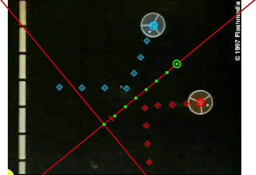

The world view displays the video and tracks in the current world reference frame, with a fixed origin and scale and the x-axis pointing right. You can zoom in to see more closely. For example, the image above shows the world view of a collision between two pucks on an air table, with red and blue tracks for the pucks and a green center of mass (cm) track.
The main video view of this collision is shown below. For the default reference frame the origin has been set at the initial position of the cm and is tilted so the cm motion is along the x-axis. You can see that in the world view the whole system, including the video, is rotated so the x-axis points to the right.

In this example, the world view is not too much different from the video view because the video image is steady so the origin, angle and scale are fixed (same in all frames). But when the video zooms, pans or shakes, the origin, angle and/or scale may vary from frame to frame, and in this case the world view becomes more interesting because in the world coordinate system all frames are shifted, rotated and scaled so the origin, angle and scale are constant.
If, for example, a video zooms in on an object (the object appears to grow with time) and every frame is correctly calibrated, then in the world view the video images shrink with time so the object has the same size in every frame. Similarly, if a video pans left and the origin tracks an object at rest (but which appears to move right), then in the world view the video images move left so the object remains in one place (the origin).
By default the world view shows the default reference frame, with axes and scale set by the user. The Coordinate System|Reference Frame menu enables you to select other reference frames in which the origin moves along with a point mass, center of mass or particle model track. Center of mass reference frames are particularly useful when studying collisions as in this example. As shown below, the video now moves left with time so that the center of mass remains at the origin. You can see that in this reference frame, the pucks move directly toward each other before the collision and directly apart after. You can also see that they are moving more slowly after the collision, proving that the collision is not completely elastic.

By default the world view auto-sizes to fit the available space. To zoom in, click the magnifier button on the world view toolbar and choose a zoom level. You can also zoom by scrolling the mouse wheel. When zoomed in you can drag with the mouse or use the scrollbars to move the image around. Here is a closer look at the collision in the center of mass frame.